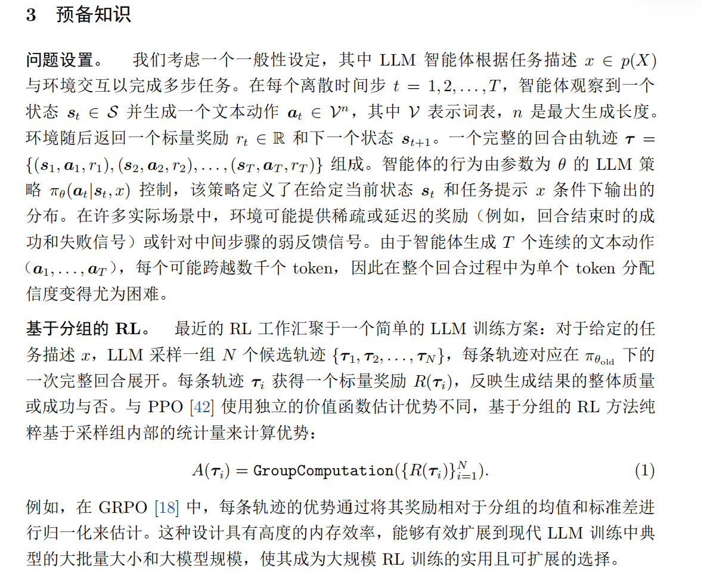
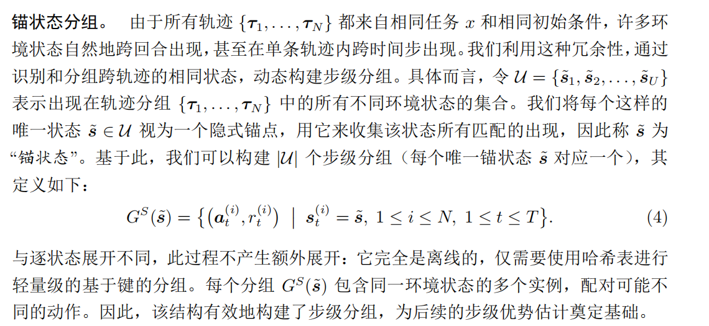
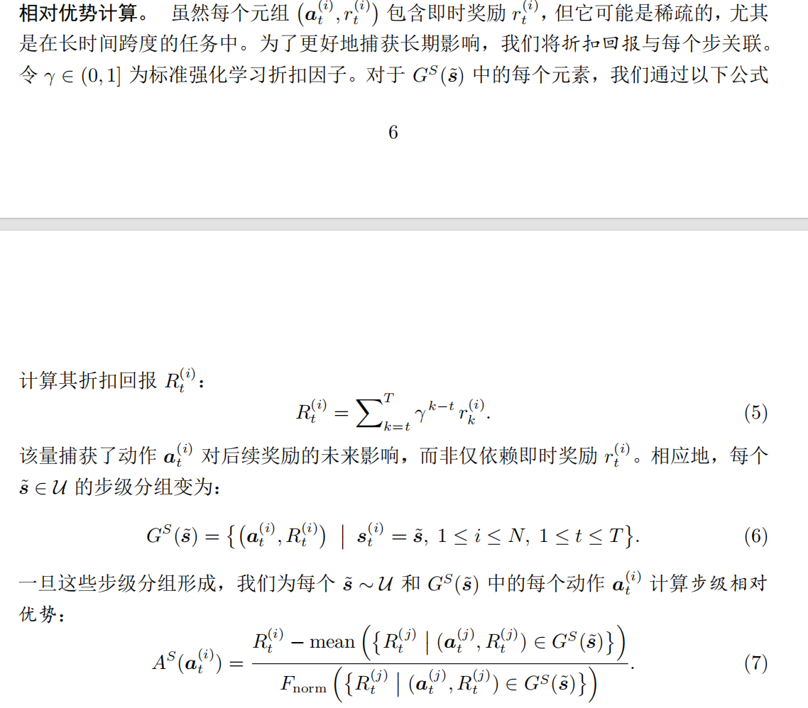
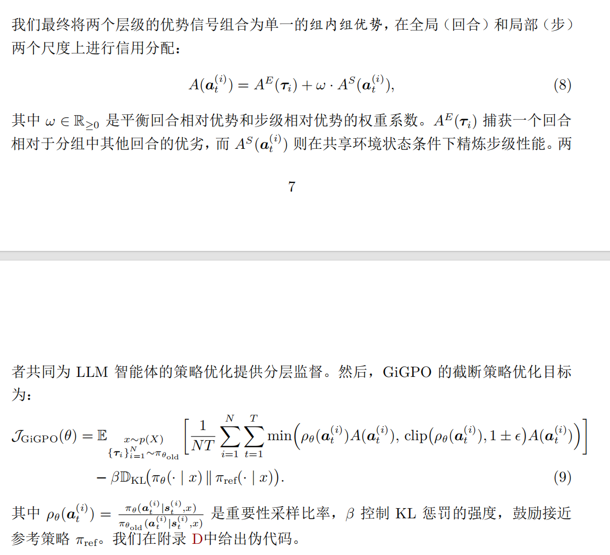
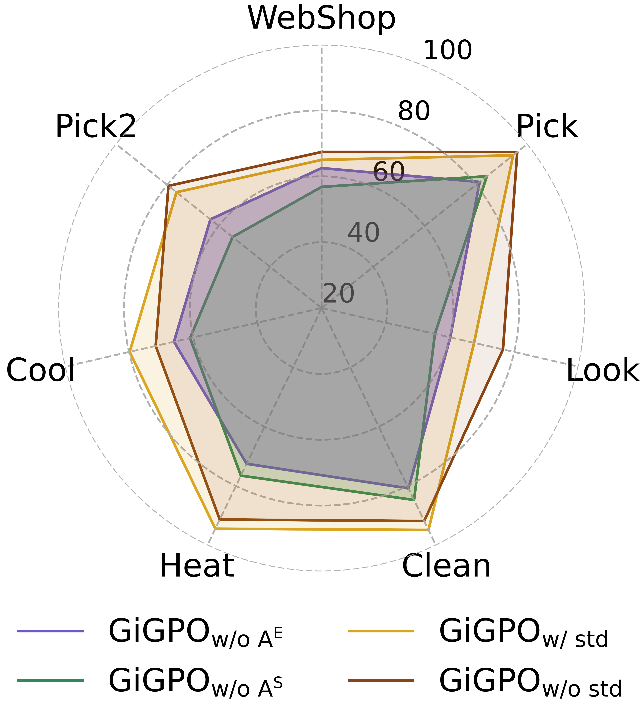

<article class="native-document format-paper" data-format="paper" aria-label="GiGPO：面向长程智能体的分层信用分配">
<header class="document-intro">
<h1 id="gigpo-面向长程智能体的分层信用分配" tabindex="-1">GiGPO：面向长程智能体的分层信用分配 <a class="header-anchor" href="#gigpo-面向长程智能体的分层信用分配" aria-label="Permalink to &quot;GiGPO：面向长程智能体的分层信用分配&quot;">&ZeroWidthSpace;</a></h1>
<p>核心贡献是在保留GRPO的优点的同时，为LLM智能体训练引入更加细致的<strong>信度分配</strong>（step层面）。</p>
<p>背景是LLM智能体训练的轨迹较长，且奖励比较稀疏。</p>
<ul>
<li>
<ol>
<li>回合层面，从<strong>相同任务和初始状态条件</strong>下出发采样一组估计，基于总回报计算宏观相对优势。和标准GRPO相似。</li>
</ol>
</li>
<li>
<ol start="2">
<li>步骤层面，引入<strong>锚点状态分组</strong>机制，它回溯性地识别跨轨迹重复出现的环境状态，称之为<em>锚点状态</em>，并将它们作为锚点来构建<em>步骤级分组</em>，从而实现局部信度分配。</li>
</ol>
</li>
</ul>
<blockquote>
<p>解释：该论文的动机是，在长程agent的同一组轨迹中，轨迹内或者轨迹之间会重复出现很多次重复的状态，将重复状态后的动作聚合为组。</p>
</blockquote>
<blockquote>
<p>本质是想办法为更细的粒度找到评判好坏的标准，这里相同状态就提供了一个基准，从而判断重复状态下哪些动作更好。</p>
</blockquote>
<p></p>
<h3 id="gigpo训练agent" tabindex="-1">GiGPO训练agent <a class="header-anchor" href="#gigpo训练agent" aria-label="Permalink to &quot;GiGPO训练agent&quot;">&ZeroWidthSpace;</a></h3>
<h4 id="回合相对优势" tabindex="-1">回合相对优势 <a class="header-anchor" href="#回合相对优势" aria-label="Permalink to &quot;回合相对优势&quot;">&ZeroWidthSpace;</a></h4>
<p>考虑到低方差分组，可以考虑将分组优势的分母设为1（原为std）</p>
<h4 id="步级相对优势" tabindex="-1">步级相对优势 <a class="header-anchor" href="#步级相对优势" aria-label="Permalink to &quot;步级相对优势&quot;">&ZeroWidthSpace;</a></h4>
<p></p>
<p></p>
<p>所谓奖励稀疏，即中间的即时奖励为0，所以这里用discount return代替。</p>
<h4 id="公式" tabindex="-1">公式 <a class="header-anchor" href="#公式" aria-label="Permalink to &quot;公式&quot;">&ZeroWidthSpace;</a></h4>
<p></p>
<h3 id="实验" tabindex="-1">实验 <a class="header-anchor" href="#实验" aria-label="Permalink to &quot;实验&quot;">&ZeroWidthSpace;</a></h3>
<p>(1)GiGPO 在训练 LLM 智能体方面的强大能力；
(2)GiGPO 的消融研究；
(3) 步级分组 $ G^S(\tilde{s}) $在训练过程中的动态趋势；
(4)GiGPO 的计算开销。</p>
<p>在<em>ALFWorld</em>和<em>WebShop</em>上面进行智能体训练，以及一系列<em>baseline</em>（闭源模型，react/reflection等无需更新参数的方法，RL如PPO,RLOO,GRPO。以及搜索增强回答的特定方法）</p>
<p><strong>训练细节</strong>：basemodel为Qwen2.5-1.5B/3B/7B-Instruct，<span class="math-inline" data-tex="\omega"></span>设为1，分组大小设为8。此外，对锚点状态引入基于相似度的模糊匹配（最长匹配子序列超过0.9视为同一状态）</p>
<h4 id="消融" tabindex="-1">消融 <a class="header-anchor" href="#消融" aria-label="Permalink to &quot;消融&quot;">&ZeroWidthSpace;</a></h4>
<p>对<span class="math-inline" data-tex="F_norm=1/std"></span>以及分别去除步级和回合相对优势，使用Qwen2.5-1.5B-Instruct作为策略模型。</p>
<p></p>
<h3 id="优势与局限" tabindex="-1">优势与局限 <a class="header-anchor" href="#优势与局限" aria-label="Permalink to &quot;优势与局限&quot;">&ZeroWidthSpace;</a></h3>
<p>在本工作中，我们提出了 GiGPO，一种新型的基于分组的强化学习算法，用于解决长周期 LLM 智能体训练中的信用分配挑战。GiGPO 引入了层次化优势估计，能够实现细粒度的逐步信用分配，同时保持基于分组的强化学习的效率和稳定性。通过回顾性地将不同轨迹中共享相同状态的步骤进行分组，该方法在不产生额外 LLM rollout 或 GPU存开销的情况下实现了这一目标。在复杂智能体环境（ALFWorld 和 WebShop）以及搜索增强问答任务上的实验评估表明，GiGPO 显著优于基于提示的智能体和先前的强化学习方法。GiGPO 的一个潜在局限性在于其依赖状态匹配来构建锚点组。在高度复杂的环境中，由于噪声或细微差异，完全相同的状态可能难以被检测到。尽管如此，GiGPO 仍然保留了较强的性能下界：在没有任何状态在轨迹间重复的极端情况下（即<span class="math-inline" data-tex="A^S"></span> = 0），它会自然退化为 GRPO，保持 GRPO 在信用分配上的有效性和稳定性。</p>
<p>虽然通过引入基于相似性的分组可以部分缓解这一问题，但探索更鲁棒的状态匹配策略，例如基于嵌入的表示或领域特定的结构等价性，仍然是一个重要的研究方向。</p>
<h3 id="附录" tabindex="-1">附录 <a class="header-anchor" href="#附录" aria-label="Permalink to &quot;附录&quot;">&ZeroWidthSpace;</a></h3>
<p>见原PDF，包含了训练的伪代码，具体的超参数设置，提示词，以及在评测集中具体的推理行为等</p>
</header>
</article>
